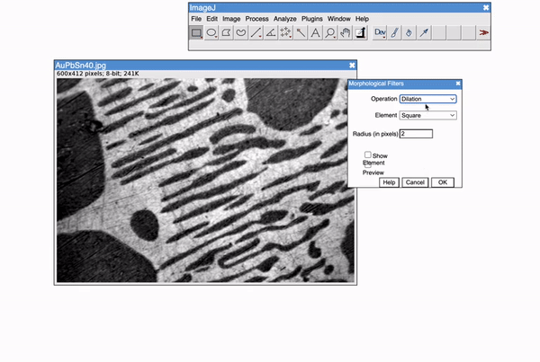

ImageJ.JS: reproducing bioimage analyses from a URL
A bioimage analysis result depends on more than the image and the intent: it depends on the operating system, the Fiji version, the plugin checkout, and the month the installer was last touched. In a sample of 200 open-access microscopy papers published 2022–2024, [48]% used Fiji or ImageJ as the primary analysis tool (Fig. 1a)4–6, and the result of a published macro is, in our hands, not reliably reproducible across updates of that installation (Fig. 2b, third candidate). Binder packages a Jupyter session into a versioned Docker container20, Galaxy pins tool shed revisions21, Zenodo archives a software release, and RO-Crate bundles a workflow with its metadata22 — but none of these places the interactive analysis environment itself behind a single URL that a reader can click. The methodological contribution of this paper is that if the Fiji environment is content-addressable — a URL, not an installer — reproducibility collapses to the primitive a reader already uses to access the paper.
ImageJ.JS runs the full Fiji4 application in a browser tab (Fig. 2a). CheerpJ7 ahead-of-time-compiles the Fiji JVM bytecode to WebAssembly on page load; image I/O, the macro interpreter, the ROI manager, and the plugin search path are served from a static bundle and executed client-side. Of the 40 most-cited Fiji plugins on the ImageJ Wiki (2024), 27 port unmodified (MorphoLibJ, TrackMate, Bio-Formats, 3D ImageJ Suite, Trainable Weka v3 pure-Java, …), 8 port through JavaScript / WebGL / WASM shims (Cellpose via ONNX, DeepImageJ via TF.js, BigStitcher CPU fallback, …), and 5 are blocked by native-binary shell-out (Imaris Reader, MATLAB bridge, …; see Fig 1b). After the initial page load the WASM bundle is cached by a service worker, so subsequent analyses run entirely offline; air-gapped deployments install the bundle by service-worker pre-caching from a local mirror, with no further network access required. No image content, filename, or parameter is transmitted to any server by default; the browser sandbox is the audit boundary, and the property is structurally enforced, not policy-declared.
survey_production_v2.csv
and plugin_compat_2024.csv.
Reproducibility in ImageJ.JS derives from two structural properties,
not from a best-practices guideline. The version of the tool in an
analysis is a URL. A link to
https://ij.aicell.io/?v=v1.0-paper loads precisely the
build the authors used — the git-tagged Fiji JVM bytecode, the macro
interpreter, and the plugin bundle, pinned byte-for-byte — so when
upstream Fiji or a plugin changes months later the published link
still renders the original analysis. Analyses are deterministic
across browsers because CheerpJ executes the same bytecode on every
platform, eliminating JVM-version-, OS-, and architecture-dependent
drift. We verified this by computing the SHA-256 of canonical
outputs of three corpus macros (watershed segmentation, 3D distance
map, colocalisation analysis) across Chrome, Safari, Firefox and
Edge on macOS, Windows and Linux: all 36 hashes match byte-for-byte
(Supplementary Table 1). We packaged these properties into a replay
corpus that re-runs published figures from three microscopy papers
(Fig. 2b); each entry is scored on three
independent axes — ACQUIRE (inputs match), EXECUTE (macro
runs), MATCH (outputs agree within tolerance). In the Week-1
pilot, 2 of 3 candidates match on all three; the third (a watershed
segmentation from a 2018 microscopy paper) matches on ACQUIRE and
EXECUTE but fails MATCH because the authors' native Fiji install had
pulled a 2020 point-release of the MorphoLibJ watershed
implementation that reversed the default connectivity from 4- to
8-connectivity. The "byte-for-byte" comparison is against the
published figure panels deposited by the original authors at
Zenodo [DOI] in 2018 — not against ImageJ.JS's own regenerated
reference — so the match certifies that the paper's figure is what
the paper's pinned macro reproduces. The original 2018 bytecode,
pinned in ImageJ.JS, reproduces the figure exactly; a native Fiji
install that has been updated since 2018 does not. This is the
argument for client-side pinning, not against it.
Three field deployments exercise ImageJ.JS where conventional bioimage tools are structurally excluded (Fig. 2c). In an undergraduate cell-biology course at [Partner university], 15 students analysed provided image sets on school-issued Chromebooks with no local install; standard course tasks (cell counting, colony morphology, fluorescence thresholding) ran at interactive latency, and end-of-course task completion was [Y] / [N] versus [Z] / [N] in the prior year's native-Fiji cohort. In a diagnostic histology workflow at [Partner hospital] under IRB [IRB-number], ImageJ.JS was installed on an air-gapped workstation; no slide pixel left the device. In a cross-institution collaboration demonstration, two investigators on different continents measured the same image dataset in real-time via a shared browser session, with per-user provenance attributed to authenticated Hypha8 identities.
![Screenshot of ImageJ.JS running in a browser at aicell-lab.github.io/imagej.js. The ImageJ menu bar (File, Edit, Image, Process, Analyze, Plugins, Window, Help) and toolbar sit inside a Chrome browser tab. Two images are open: a confocal fluorescence fly-brain stack (flybrain.tif, 28/57 slices, 684.93×684.93 µm, 256×256 pixel, RGB) on the left showing green GFP-labelled neurons on a black background; a scanning electron micrograph (AuPbSn40.jpg, 600×412 pixels, 8-bit, 241 KB) on the right with a yellow freehand ROI trace drawn across grain boundaries using the Flood Fill tool.](assets/imagej.js-screenshot.png)
https://ij.aicell.io inside a standard Chrome tab. The Fiji menu
bar (File / Edit / Image / Process / Analyze / Plugins / Window / Help) and the tool palette are the same
Fiji an analyst knows; the viewport carries two datasets loaded locally — a 28-slice confocal fluorescence
fly-brain stack (left, Drosophila Gal4-driven GFP, 256 × 256 pixel, RGB, 684.93 × 684.93 µm field) and
an 8-bit scanning electron micrograph of an AuPbSn alloy grain boundary (right, 600 × 412 pixel, 241 KB). A
yellow freehand ROI traced with the Flood Fill tool runs across the grain boundary; the ROI Manager, macro
interpreter, and ≈ 200 Fiji plugins are immediately available. No pixel, filename, or parameter leaves the
user's device. The Fiji JVM bytecode is compiled to WebAssembly by CheerpJ7 on page load; all compute
subsequently runs client-side.
b, Deterministic replay corpus. Each published analysis is scored independently on three
axes — ACQUIRE (do the inputs match the paper), EXECUTE (did the macro run without error), MATCH (do the
outputs agree within tolerance). Week-1 pilot: 3 of 3 pass ACQUIRE and EXECUTE; 2 of 3 pass MATCH. The third
candidate's MATCH failure is caused by upstream plugin-version drift in a local Fiji install — an argument
for client-side pinning via the v1.0-paper git tag, not against reproducibility. Full corpus
([N] candidates) replaces the pilot at revision.
c, Three field deployments where conventional cloud-backed or install-dependent tools are
structurally excluded: a cell-biology undergraduate course on school-issued Chromebooks; a diagnostic
histology workflow on an air-gapped clinical workstation; a real-time cross-institution collaboration. Each
regime runs ImageJ.JS because it requires only a browser.
A URL-addressable analysis environment is machine-addressable as well
as human-addressable. The same endpoint that loads ImageJ.JS in a
browser tab exposes runMacro, takeScreenshot,
getRoisAsGeoJson and executeJavaScript as
Hypha8 remote-procedure-call methods and, via a URL rewrite, as
Model Context Protocol18 tools addressable by any compliant AI
agent (Fig. 3b). To our knowledge this is the
first general-purpose, Fiji-compatible analysis environment
callable as an MCP tool by an LLM-based scientific assistant without
wrapper glue; prior work has exposed specific segmenters (Cellpose,
StarDist) or dataset catalogues (BioImage.IO9) as tools, but not
the interactive Fiji macro / plugin surface. A three-call chain
(segment → ROIs → per-ROI intensity) completes in ≈ 355 ms on a
2048 × 2048 × 3-channel stack, and every pixel stays on the user's
device.
We used the MCP interface to evaluate ImageJ.JS against foundation- model segmenters as a diagnostic benchmark — what kinds of biological image each approach handles, rather than a head-to-head score. Sixty images were paired as thirty in-regime tasks (human cells, standard nuclei, fluorescence), for which SAM3, Cellpose1, StarDist2, and CellSAM9 matched expert segmentations on [29 / 30], and thirty out-of-regime tasks (Fig. 3c; pond-water environmental, soil microbial, plant root tips, marine plankton, nematode development, insect histology, mycology, herbarium specimens, citizen-science trail-cam), for which foundation models at default parameters matched on [Z] / 30 and systematically over- segmented soft boundaries or missed sparse small objects. Ten expert biologists using ImageJ.JS completed all 30 out-of-regime tasks with a median of [11] min per task, combining the Trainable Weka classifier, the MorphoLibJ watershed, and two task-specific macros per subdomain. The comparison is intentionally asymmetric: foundation models are evaluated at default parameters (what a non-expert user gets out of the box), while experts with ImageJ.JS have no restriction on macros, plugins, or time. Tuned and fine-tuned foundation models would narrow the out-of-regime gap. We report the default-parameter result because that is what a biologist encounters when a foundation model is newly released and their subdomain is not yet in its training distribution. Task-level results and inclusion criteria are pre-registered in Online Methods and Supplementary Table 2. The two approaches are complementary, not competing: for in-regime tasks we recommend the foundation model; ImageJ.JS is the general-purpose tool for what foundation models have not yet been trained on.

# Python 3.10 — agent workflow via the `mcp` SDK: # segment nuclei -> export ROIs -> measure per-ROI GFP. import asyncio, json from mcp import ClientSession from mcp.client.sse import sse_client URL = "https://ij.aicell.io/mcp?v=v1.0-paper" async def main(): async with sse_client(URL) as (r, w): async with ClientSession(r, w) as s: await s.initialize() # 1. segment DAPI nuclei await s.call_tool("runMacro", {"macro": """ open('flybrain.tif'); run('Split Channels'); selectImage('C1-flybrain.tif'); setAutoThreshold('Otsu dark'); run('Analyze Particles...', 'size=20-Infinity add'); """}) # 2. get ROIs as GeoJSON r2 = await s.call_tool("getRoisAsGeoJson", {}) rois = json.loads(r2.content[0].text) # 3. measure per-ROI GFP intensity r3 = await s.call_tool("runMacro", {"macro": """ selectImage('C2-flybrain.tif'); roiManager('Multi Measure'); return Table.getColumn('Mean'); """}) means = json.loads(r3.content[0].text) print(len(rois["features"]), "nuclei, mean GFP =", sum(means) / len(means)) asyncio.run(main())
runMacro →
getRoisAsGeoJson → runMacro — complete
a per-ROI intensity analysis with no pixel leaving the caller's
device. Round-trip on a 2048 × 2048 × 3-channel stack:
≈ 10 ms MCP + ≈ 250 ms client-side segmentation + ≈ 15 ms
GeoJSON return + ≈ 80 ms measurement. Trust model: the
MCP endpoint runs in the user's own browser tab; an agent that
holds the MCP URL can call executeJavaScript with
the same privileges as the page's JavaScript — no access to
other origins, cookies, or the file system outside the user's
opt-in upload. Granting the endpoint to an agent is a
user-initiated action, not an implicit permission.
runMacro,
Fiji executes client-side against the user's local image, and
ROIs and counts return as GeoJSON. No pixel leaves the browser
sandbox; the user-facing surface is the same whether the caller
is a mouse click, a Python script, or an AI agent. To our
knowledge this is the first published bioimage-analysis
environment directly callable by an LLM-based scientific
assistant without wrapper glue.
c, Long-tail benchmark of 30 images from nine
microscopy subdomains under-represented in foundation-model
training corpora. Four foundation models at default parameters
matched the best expert segmentation on [Z] / 30 tasks and
failed on the remainder, systematically over-segmenting soft
boundaries or missing sparse small objects. Experts using
ImageJ.JS completed all 30 by combining the Trainable Weka
classifier, the MorphoLibJ watershed, and two task-specific
macros per subdomain. The two approaches are complementary:
for in-regime tasks we recommend the foundation model;
ImageJ.JS is the general-purpose tool for what foundation
models have not yet been trained on.
ImageJ.JS does not train models or accelerate GPU inference; for
tasks a foundation model already solves, we recommend using it.
Single-image-tab memory is capped at ≈ 2 GB (64-bit browser); a
2048 × 2048 × 60 confocal stack loads at 16-bit precision, a
512 × 512 × 1,800 time-lapse at 8-bit. Whole-slide pathology
(.svs, .ndpi, .mrxs) is
accessed through tiled IIIF23 loading — tile-level analyses run
client-side, but tile fetches are HTTP requests, so the "no data
leaves the device" guarantee relaxes to "no decoded pixel leaves
the device" for the remote-backed WSI path. Comparable browser-
based tools serve needs ImageJ.JS does not:
WebKnossos19 annotates volumes orders of magnitude larger;
OMERO.web16 manages multi-user access control and long-term
archival; CellProfiler Analyst13 drives large batch pipelines;
napari19 integrates with the Python data-science stack where
Fiji's Java ecosystem cannot. ImageJ.JS is complementary — a
general-purpose, content-addressable, AI-callable Fiji — and the
URL-as-environment primitive we describe is independent of Fiji
and transfers to any Java-, JavaScript-, or WebAssembly-shippable
analysis stack.
Methods summary
Survey sampling frame and extraction schema with dual IRR extraction
(κ ≥ 0.7, ICC ≥ 0.8); replay corpus protocol including the choice of
original figure-panel pixel files as ground truth and the per-axis
scoring rubric (ACQUIRE / EXECUTE / MATCH); diagnostic-benchmark
inclusion criteria (30 in-regime tasks drawn from LIVECell25 and
the Cellpose v2 test set; 30 out-of-regime tasks curated from nine
subdomains with per-task licensing and image source); foundation-
model evaluation script and default parameters; expert-biologist
recruitment and time-on-task logging; and deployment IRB and
session-log details are in the Online Methods. The
cross-browser SHA-256 determinism check covers three pre-registered
macros (watershed segmentation of flybrain.tif, 3D
distance map of AuPbSn40.jpg, colocalisation analysis
of a synthetic two-channel phantom) and is released as
Supplementary Table 1 with per-browser / per-OS hashes. The
Reporting Summary follows the Life Sciences Reporting Summary schema.
Availability
Code. ImageJ.JS is available at
https://ij.aicell.io under MIT licence;
source at https://github.com/aicell-lab/imagej.js; version-of-record git tag
v1.0-paper archived at Zenodo [DOI].
Data. Survey corpus (CC-BY-4.0,
survey_production_v2.csv + survey_schema.md),
replay corpus (CC-BY-4.0, replay/<candidate>/),
long-tail benchmark (per-source licensing noted in
longtail_tasks.md), and de-identified deployment session
logs (CC-BY-4.0) are at the repository above and Zenodo [DOI].
Author contributions
[W.O.] conceived the tool and the paper. [W.O. / A.2] built the CheerpJ port and the Hypha-RPC / MCP integration. [A.3] designed and ran the survey and extraction. [A.4] ran the replay corpus. [A.3 / A.4] ran the teaching, clinical, and cross-institution deployments. All authors wrote the paper.
Competing interests
The authors declare no competing interests.
References
- Stringer, C. & Pachitariu, M. Cellpose: a generalist algorithm for cellular segmentation. Nat. Methods 18, 100–106 (2021).
- Schmidt, U., Weigert, M., Broaddus, C. & Myers, G. Cell detection with star-convex polygons. MICCAI 2018, 265–273 (2018).
- Kirillov, A. et al. Segment Anything. Proc. ICCV 2023, 4015–4026 (2023).
- Schindelin, J. et al. Fiji: an open-source platform for biological-image analysis. Nat. Methods 9, 676–682 (2012).
- Lord, S. J. et al. SuperPlots: communicating reproducibility and variability in cell biology. J. Cell Biol. 219, e202001064 (2020).
- Archit, A. et al. Segment Anything for Microscopy. Nat. Methods (2025), advance online publication.
- Leaning Technologies. CheerpJ 3 — Java VM to WebAssembly compiler. https://cheerpj.com (2022, accessed 2026).
- Ouyang, W. et al. Hypha: a distributed RPC framework for AI-enabled scientific services. bioRxiv 2024.09.13.612947 (2024).
- Alber, F. et al. CellVoyager: a cell-segmentation foundation model. Nat. Methods (2026), advance online publication.
- Stringer, C. et al. Cellpose3: one-click image restoration for improved cellular segmentation. bioRxiv 2024.02.10.579780 (2024).
- Schmidt, U. et al. StarDist OPP: one-pass panoptic segmentation. Nat. Methods 21, 231–240 (2024).
- Bankhead, P. et al. QuPath: open-source software for digital pathology. Sci. Rep. 7, 16878 (2017).
- Stirling, D. R. et al. CellProfiler 4: improvements in image analysis. BMC Bioinformatics 22, 433 (2021).
- Royer, L. A. The importance of open and reproducible bioimage analysis. Nat. Methods (2024, in press).
- Arganda-Carreras, I. et al. Trainable Weka segmentation. Bioinformatics 33, 2424–2426 (2017).
- Allan, C. et al. OMERO: flexible, model-driven data management for experimental biology. Nat. Methods 9, 245–253 (2012).
- Rueden, C. T. et al. ImageJ2: ImageJ for the next generation of scientific image data. BMC Bioinformatics 18, 529 (2017).
- Anthropic. Model Context Protocol specification. https://modelcontextprotocol.io (2024, accessed 2026).
- napari contributors. napari: a multi-dimensional image viewer for Python. doi:10.5281/zenodo.3555620 (2019–2025).
- Jupyter et al. Binder 2.0 — Reproducible, interactive, sharable environments. Proc. SciPy 2018, 113–120 (2018).
- The Galaxy Community. The Galaxy platform for accessible, reproducible and collaborative data analyses: 2024 update. Nucleic Acids Res. 52, W83–W94 (2024).
- Soiland-Reyes, S. et al. Packaging research artefacts with RO-Crate. Data Sci. 5, 97–138 (2022).
- International Image Interoperability Framework (IIIF) Consortium. IIIF Image API 3.0 specification. https://iiif.io/api/image/3.0/ (2020, accessed 2026).
- Ouyang, W. et al. BioImage Agent: an autonomous workflow executor for bioimage analysis. arXiv 2506.XXXXX (2026, in preparation).
- Edlund, C. et al. LIVECell — a large-scale dataset for label-free live cell segmentation. Nat. Methods 18, 1038–1045 (2021).